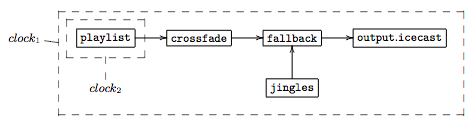

class: center, middle # Liquidsoap  Audio & Video Streaming Language --- # What is Liquidsoap? -- A language to create audio and video streams -- ```ruby myplaylist = playlist("~/radio/music.m3u") jingles = playlist("~/radio/jingles.m3u") radio = myplaylist radio = random(weights = [1, 4],[jingles, radio]) output.icecast(%mp3, host = "localhost", port = 8000, password = "hackme", mount = "basic-radio", radio) ``` -- Programming tools to help the user -- * Verifications of specific properties (i.e. "Can this source fail?") -- ```ruby At line 5, char 8-49: Error 7: Invalid value: That source is fallible ``` --- # What is Liquidsoap? A language to create audio and video streams ```ruby myplaylist = playlist("~/radio/music.m3u") jingles = playlist("~/radio/jingles.m3u") security = single("~/radio/sounds/default.mp3") radio = myplaylist radio = random(weights = [1, 4],[jingles, radio]) radio = fallback(track_sensitive = false, [radio, security]) output.icecast(%mp3, host = "localhost", port = 8000, password = "hackme", mount = "basic-radio", radio) ``` Programming tools to help the user * Verifications of specific properties (i.e. "Can this source fail?") ```ruby At line 5, char 8-49: Error 7: Invalid value: That source is fallible ``` -- * Static typing catered for its users (source media content, unused variables, etc..) --- # What is Liquidsoap? A language to create audio and video streams * Dedicated time predicates: `1w12h` -- ```ruby switch([ ({ 20h-22h30 }, prime_time), ({ 1w }, monday_source), ({ (6w or 7w) and 0h-12h }, week_ends_mornings), ({ true }, default_source) ]) ``` -- * ... --- # A little history.. * Founded in 2003 by David Baelde and Samuel Mimram -- * Savonet: SAm and daVid Ocaml NETwork 🙂 -- * Originally a studet project at Ecole Normale Supérieure de Lyon -- * Purpose was to stream the music shared on the local SAMBA (windows) network to listen to music while coding -- * Features: Indexing of shared music files, IRC bot with user-requests & Icecast streaming output -- * Creating a new language emerged as part of the school's expected student project -- * OCaml! --- # The liquidsoap language -- Scripting language -- * Functional language -- ```ruby input.harbor(on_connect=callback, ...) ``` -- * Static & inferred types -- ```ruby source(audio=2, video=0, midi=0) ``` -- ```ruby (..., format('a), source('a)) -> source('a) ``` -- * Labels and optiomal parameters -- ```ruby def my_function(?optional_arg, ~labeled_arg, arg1, arg2) = ... end ``` --- # The liquidsoap language Scripting language * Functional language ```ruby input.harbor(on_connect=callback, ...) ``` * Static & inferred types ```ruby source(audio=2, video=0, midi=0) ``` ```ruby (..., format('a), source('a)) -> source('a) ``` * Labels and optiomal parameters ```ruby def my_function(?optional_arg, ~labeled_arg, arg1, arg2) = ... end my_function(arg1, arg2, labeled_arg="foo", optional_arg=123) my_function(arg1, arg2, labeled_arg="foo") ``` --- # The liquidsoap language Scripting language: * Self-documented -- ```shell % liquidsoap -h input.srt Start a SRT agent in listener mode to receive and decode a stream. Type: (?id : string, ?bind_address : string, ?clock_safe : bool, ?content_type : string, ?dump : string, ?max : float, ?messageapi : bool, ?on_connect : ((unit) -> unit), ?on_disconnect : (() -> unit), ?payload_size : int, ?port : int) -> source('a) Category: Source / Input Parameters: * id : string (default: "") Force the value of the source ID. * bind_address : string (default: "0.0.0.0") Address to bind on the local machine. ... ``` --- # Some common features -- * Large set of supported audio and video codecs -- * I/O -- * Alsa, portaudio, ao, etc.. -- * File output -- * HTTP, icecast, HLS, SRT, etc.. -- * Harbor (icecast) input -- * ffmpeg, gstreamer -- * Youtube, via RTMP & ffmpeg! -- * Functional cross-fading -- * blank detection -- * Ladspa, dssi, lilv & ffmpeg filters --- # Usage -- Web radio -- With automated switch from playlist and live content -- and user interactions -- Normalized audio volume across tracks -- Also with compression, please! -- Crossfade transitions -- Jingle transitions -- Output in multiple format (mp3, aac, high/low quality) -- To multiple destinations (icecast, HLS, etc..) -- Not so easy after all! -- Wait, how about video? -- Sam : And midi? 😅 --- # Usage .cols[ .fifty[ ```ruby # Configuration set("server.telnet", true) enable_replaygain_metadata() # Files-based sources files = playlist("~/radio/music.m3u") jingles = playlist("~/radio/jingles.m3u") files = random(weights=[1, 4], [jingles, files]) files = amplify(1.,override="replay_gain", files) # User requests user_requests = request.queue( id="user_requests") radio = fallback(track_sensitive=true, [user_requests, files]) # Crossfade tracks radio = crossfade(radio, smart=true) # Live source live = input.harbor("live") ``` ] .fifty[ ] ] --- # Usage .cols[ .fifty[ ```ruby # Configuration set("server.telnet", true) enable_replaygain_metadata() # Files-based sources files = playlist("~/radio/music.m3u") jingles = playlist("~/radio/jingles.m3u") files = random(weights=[1, 4], [jingles, files]) files = amplify(1.,override="replay_gain", files) # User requests user_requests = request.queue( id="user_requests") radio = fallback(track_sensitive=true, [user_requests, files]) # Crossfade tracks radio = crossfade(radio, smart=true) # Live source live = input.harbor("live") ``` ] .fifty[ ```ruby # Full radio radio = fallback(track_sensitive=false, [live, radio]) radio = compress(radio) # Outputs formats = [ ("mp3-high", %mp3(bitrate=96)), ("mp3-low", %mp3(bitrate=128)), ("aac-high", %fdkaac(bitrate=64)), ("aac-low", %fdkaac(bitrate=32)), ] output.file.hls("/path/to/files", hls_formats, radio) def mk_iceast_output(config) = let (name, format) = config output.icecast(format, host = "localhost", port = 8000, password = "hackme", mount = name, radio) end list.iter(mk_icecast_output, formats) ``` ] ] --- # Usage (contd.) Smart crossfade -- .cols[ .fifty[ ```ruby def transition(a,b,ma,mb,sa,sb) if a <= medium and b <= medium and abs(a - b) <= margin then log("Transition: crossed, fade-in, fade-out.") add(fade.out(sa),fade.in(sb)) elsif # Do not fade if it's already very low. b >= a + margin and a <= medium and b <= high then log("Transition: crossed, no fade-out.") add(sa,sb) else log("No transition: just sequencing.") sequence([sa, sb]) end end radio = cross(transition, radio) ``` ] .fifty[ ] ] --- # Usage (contd.) Clocks & latency control -- * Network glitches -- * Clock inconsistency -- ```ruby input = input.alsa() clock.assign_new(id="icecast", [output.icecast(%mp3,mount="blah",mksafe(buffer(input)))]) output.file( %mp3,"record-%Y-%m-%d-%H-%M-%S.mp3", input) ``` -- * Real-time vs. not real-time -- <center>  </center> .cols[ .fifty[ ] .fifty[ ] ] --- # Future developments -- Tight integration with ffmpeg -- * Extensive support for input and output encoding formats -- * Support for ffmpeg filters -- More support for video -- Support for encoded content --- # Questions? <center style="height: 65%;"> </center>